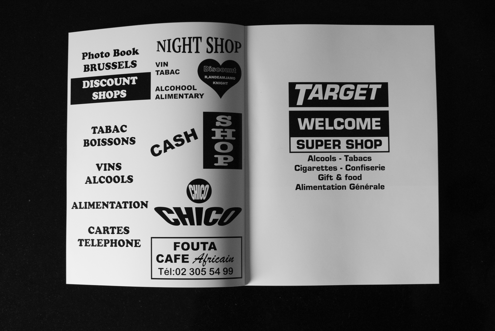
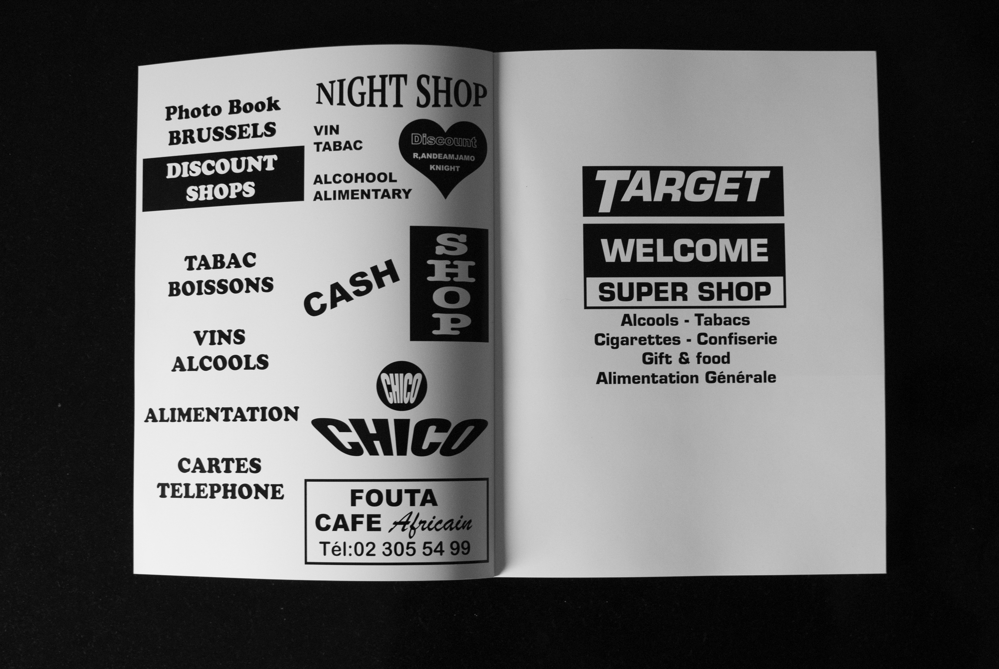

This photobook is a walk through the city of Brussels. In the
making of
Target,I got lost across many streets of Brussels in
search of front shops that catch my eyes.
From all those lookalike shops, I found many of the same, and also
many variations. As you pass different signs and display, you
discover different kind of intentions.
Big cities resonates with globalization and tourism, It can drives
to brutal simplicity and sameness. Nethertheless, cities are
gathered by people from diverse horizons. It creates a sense of
complexity, and globalization becomes a challenge of the daily
street life.
 
